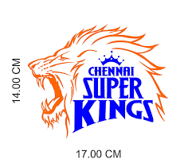
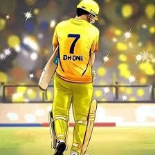

CHENNAI SUPER KINGS

The Chennai Super Kings (CSK) are a franchise cricket team based in Chennai, Tamil Nadu, which plays in the
Indian Premier League (IPL). Founded in 2008, the team plays its home matches at the M. A. Chidambaram
Stadium in Chennai. The team served a two-year suspension from the IPL starting July 2015 for the alleged
involvement of their owners in the 2013 IPL betting case, and won the title in its comeback season. The
team is captained by Mahendra Singh Dhoni and coached by Stephen Fleming.
The Super Kings have lifted the IPL title thrice (in 2010, 2011 and 2018), and has the highest win
percentage among all teams in the IPL (61.28). They hold the records of most appearances in the playoffs
(ten) and the Final (eight) of the IPL. They are the only IPL team to qualify for the playoff stage in each
edition of their appearance in the league. In addition, they have also won the Champions League Twenty20 in
2010 and 2014. The brand value of the Super Kings in 2019 is estimated to be around ₹732 crore (roughly $104
million), making them the second-most valuable IPL franchise, after Mumbai Indians.
CAPTAIN

Mahendra Singh Dhoni born 7 July 1981), is an Indian former
international cricketer who captained the Indian national team in limited-overs formats from 2007 to 2016
and in Test cricket from 2008 to 2014. Under his captaincy, India won the 2007 ICC World Twenty20, the 2010
and 2016 Asia Cups, the 2011 ICC Cricket World Cup and the 2013 ICC Champions Trophy. A right-handed
middle-order batsman and wicket-keeper, Dhoni is one of the highest run scorers in One Day Internationals
(ODIs) with more than 10,000 runs scored and is considered an effective "finisher" in limited-overs
formats. He is also regarded by some as one of the best wicket-keepers and captains in modern
limited-overs international cricket.
He made his ODI debut in December 2004 against Bangladesh, and played his first Test a year later against
Sri Lanka. Dhoni has been the recipient of many awards, including the ICC ODI Player of the Year award in
2008 and 2009 (the first player to win the award twice), the Rajiv Gandhi Khel Ratna award in 2007, the
Padma Shri, India's fourth highest civilian honour, in 2009 and the Padma Bhushan, India's third highest
civilian honour, in 2018. He was named as the captain of the ICC World Test XI in 2009, 2010 and 2013. He
has also been selected a record 8 times in ICC World ODI XI teams, 5 times as captain. The Indian
Territorial Army conferred the honorary rank of Lieutenant Colonel to Dhoni on 1 November 2011. He is the
second Indian cricketer after Kapil Dev to receive this honour.